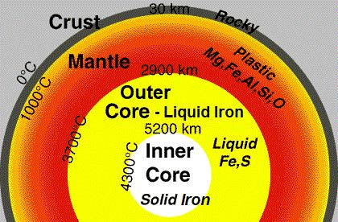

7. Two Days of the 1st Paragraph: ―Say: Is it that ye deny Him Who created the lands in Two Days? And do ye join equals with Him? He is the Lord of the universes…‖ [Al Quran 41:9-12] These are the same Two Days mentioned in the third paragraph. The dust and asteroids (lands) produced in the preceding cycle of the universe scattered into the skies of the present cycle during the Big Bounce. As the skies expanded, matter concentrated into galaxies. Eventually, the solar system, including the primitive Earth, formed within the Milky Way galaxy. Scientists generally believe that the Earth formed from numerous small solid particles left over from the creation of the Sun. According to the best available evidence, the main ingredients were iron and silicates, along with trace amounts of other elements. FIGURE 41.9: Earth‘s Interior

চিত্র 41_9 / Figure 41_9
7. 1ম অনুচ্ছেদের দুই দিন: - বলুন: আপনি কি তাকে অস্বীকার করছেন যিনি দুই দিনে জমি সৃষ্টি করেছেন? আর তোমরা কি তাঁর সাথে শরীক হবে? তিনি মহাবিশ্বের পালনকর্তা...'' [আল কুরআন 41:9-12] তৃতীয় অনুচ্ছেদে উল্লেখিত একই দুই দিন। মহাবিশ্বের পূর্ববর্তী চক্রে উৎপন্ন ধূলিকণা এবং গ্রহাণু (ভূমি) বিগ বাউন্সের সময় বর্তমান চক্রের আকাশে ছড়িয়ে পড়ে। আকাশ প্রসারিত হওয়ার সাথে সাথে পদার্থগুলি গ্যালাক্সিতে কেন্দ্রীভূত হয়েছিল। অবশেষে, সৌরজগৎ, আদিম পৃথিবী সহ, মিল্কিওয়ে গ্যালাক্সির মধ্যে গঠিত হয়। বিজ্ঞানীরা সাধারণত বিশ্বাস করেন যে সূর্য সৃষ্টির পর থেকে অবশিষ্ট অসংখ্য ছোট কঠিন কণা থেকে পৃথিবী গঠিত হয়েছে। সেরা উপলব্ধ প্রমাণ অনুসারে, প্রধান উপাদানগুলি ছিল লোহা এবং সিলিকেট, অন্যান্য উপাদানগুলির ট্রেস পরিমাণ সহ। চিত্র 41.9: পৃথিবীর অভ্যন্তর
চিত্র 41_9 / Figure 41_9
In light of the Quran, the Earth did not contain all the elements when it was part of the assembly of lands (dust and asteroids) at the beginning of the present cycle. It was composed primarily of silicon and elements lighter than silicon. Excluding iron, the Earth is mainly composed of silicon and elements lighter than silicon. The following four elements make up over sixty percent of the Earth: one is silicon, and the other three are lighter than silicon: 1. Silicon – 15.1 % 2. Oxygen – 30.1 % 3. Magnesium – 13.9 % 4. Aluminum – 1.4 % Total – 60.5 % The atomic number of silicon is 14. Lighter elements in the periodic table include hydrogen (H), helium (He), lithium (Li), beryllium (Be), boron (B), carbon (C), nitrogen (N), oxygen (O), fluorine (F), neon (Ne), sodium (Na), magnesium (Mg), aluminum (Al), and silicon (Si, atomic number 14). These elements were created in the previous cycle of the universe. When the Big Bounce occurred, these elements were present in the contracted universe. Some of them formed dust and asteroids, which are also referred to as the 'assembly of lands' in the following verse:
কুরআনের আলোকে, পৃথিবী যখন বর্তমান চক্রের শুরুতে ভূমির সমাবেশের (ধুলো এবং গ্রহাণু) অংশ ছিল তখন সমস্ত উপাদান ধারণ করেনি। এটি প্রাথমিকভাবে সিলিকন এবং সিলিকনের চেয়ে হালকা উপাদান দিয়ে গঠিত। লোহা বাদে, পৃথিবী প্রধানত সিলিকন এবং সিলিকনের চেয়ে হালকা উপাদান দিয়ে গঠিত। নিম্নলিখিত চারটি উপাদান পৃথিবীর ষাট শতাংশেরও বেশি তৈরি করে: একটি হল সিলিকন, এবং বাকি তিনটি সিলিকনের চেয়ে হালকা: 1. সিলিকন - 15.1 % 2. অক্সিজেন - 30.1 % 3. ম্যাগনেসিয়াম - 13.9 % 4. অ্যালুমিনিয়াম - 1.4 % মোট - 60.1 থেকে 4.5% সিলিক উপাদানের মোট - 60.5% L. পর্যায় সারণীতে রয়েছে হাইড্রোজেন (H), হিলিয়াম (He), লিথিয়াম (Li), বেরিলিয়াম (Be), বোরন (B), কার্বন (C), নাইট্রোজেন (N), অক্সিজেন (O), ফ্লোরিন (F), নিয়ন (Ne), সোডিয়াম (Na), ম্যাগনেসিয়াম (Mg), অ্যালুমিনিয়াম (Si), এবং সিলমিক (Si, 4)। এই উপাদানগুলি মহাবিশ্বের পূর্ববর্তী চক্রে তৈরি হয়েছিল। যখন বিগ বাউন্স ঘটে তখন এই উপাদানগুলো সংকুচিত মহাবিশ্বে উপস্থিত ছিল। তাদের মধ্যে কিছু ধূলিকণা এবং গ্রহাণু তৈরি করেছিল, যাকে নিম্নলিখিত আয়াতে 'ভূমির সমাবেশ' হিসাবেও উল্লেখ করা হয়েছে:
―He is the One Who created for you what was in the assembly of land (ma fi ardi jamian).Then He established Himself (did istawa / infused the force) into the Sky and fashioned them into Seven Skies. And of all things He had perfect knowledge‖ [Al Quran 2:29]
- তিনিই সেই সত্তা যিনি তোমাদের জন্য জমিনের সমাবেশে যা ছিল তা সৃষ্টি করেছেন (মাফি আরদি জামিয়ান)। অতঃপর তিনি নিজেকে আকাশে স্থাপন করেছেন (ইস্তোওয়া/শক্তি প্রয়োগ করেছেন) এবং সেগুলোকে সাত আসমানে রূপ দিয়েছেন। আর সব বিষয়েই তিনি নিখুঁত জ্ঞান রাখেন” [আল কুরআন ২:২৯]
8. Four Days (4 days of the 2nd paragraph)
8. চার দিন (2য় অনুচ্ছেদের 4 দিন)
The skies (waves of space) expanded, and galaxies formed. After a long period of time, elements heavier than silicon were produced in the stars. Some of these stars exploded, scattering the elements into space. About 4.6 billion years ago, the necessary elements descended into the primitive Earth, which had formed from the elements up to silicon that were available in the early universe of the present cycle. This is stated in the verses under discussion, mentioned below:
আকাশ (মহাকাশের তরঙ্গ) প্রসারিত হয়েছে এবং ছায়াপথ তৈরি হয়েছে। দীর্ঘ সময়ের পরে, তারাগুলিতে সিলিকনের চেয়ে ভারী উপাদানগুলি তৈরি হয়েছিল। এই নক্ষত্রগুলির মধ্যে কিছু বিস্ফোরিত হয়েছে, উপাদানগুলিকে মহাকাশে ছড়িয়ে দিয়েছে। প্রায় 4.6 বিলিয়ন বছর আগে, প্রয়োজনীয় উপাদানগুলি আদিম পৃথিবীতে নেমে এসেছিল, যে উপাদানগুলি থেকে সিলিকন পর্যন্ত গঠিত হয়েছিল যা বর্তমান চক্রের প্রথম মহাবিশ্বে উপলব্ধ ছিল। নিম্নে উল্লিখিত আলোচ্য আয়াতে এ কথা বলা হয়েছে:
And He placed therein firmly set mountains, and parked therein from above it, and determined therein its sustenance in four days equal—for those who ask. [Al Quran 41: 10]
অতঃপর তিনি তাতে স্থাপন করেছেন পাহাড়-পর্বত এবং তার উপর থেকে স্থাপন করেছেন এবং সেখানে চার দিনে তার রিযিক নির্ধারণ করেছেন সমান-যারা চায় তাদের জন্য। [আল কুরআন 41:10]
We need many types of elements heavier than silicon in our foods. Primarily, these elements were delivered to Earth in the form of meteorites, as stated in the above verse: ―…parked therein from above it, and determined therein its sustenance in four days equal…‖ The following verse indicates that the initial Earth did not contain iron; it descended later:
আমাদের খাবারে সিলিকনের চেয়ে ভারী অনেক ধরনের উপাদানের প্রয়োজন হয়। প্রাথমিকভাবে, এই উপাদানগুলিকে উল্কাপিণ্ডের আকারে পৃথিবীতে সরবরাহ করা হয়েছিল, যেমন উপরের আয়াতে বলা হয়েছে: “…উপর থেকে উহাতে পার্ক করা হয়েছে, এবং চার দিনে সমানভাবে তার জীবিকা নির্ধারণ করা হয়েছে…” নিম্নলিখিত আয়াতটি নির্দেশ করে যে প্রাথমিক পৃথিবীতে লোহা ছিল না; এটি পরে নেমে এসেছে:
―And we sent down the iron, wherein there is strength and many benefits for the people.‖ [Al Quran 57:25]
"এবং আমি লোহা নাযিল করেছি, যাতে রয়েছে শক্তি এবং মানুষের জন্য অনেক উপকার।" [আল কুরআন 57:25]
Thus, the asteroids contained a massive amount of iron, making up 32.1% of the Earth's composition. The remaining 7.4% (100 – 60.5 – 32.1) of the matter consists of the following elements: 1. Sulfur – 2.9 % 2. Nickel – 1.8 % 3. Calcium – 1.5 % 4. The remaining 1.2% consists of trace amounts of other elements. Total 7.4 %
এইভাবে, গ্রহাণুগুলিতে প্রচুর পরিমাণে লোহা রয়েছে, যা পৃথিবীর গঠনের 32.1% তৈরি করে। অবশিষ্ট 7.4% (100 - 60.5 - 32.1) উপাদানগুলি নিম্নলিখিত উপাদানগুলি নিয়ে গঠিত: 1. সালফার - 2.9 % 2. নিকেল - 1.8 % 3. ক্যালসিয়াম - 1.5 % 4. অবশিষ্ট 1.2% অন্যান্য উপাদানের ট্রেস পরিমাণ নিয়ে গঠিত। মোট ৭.৪%
These elements (7.4%) serve two main purposes:
এই উপাদানগুলি (7.4%) দুটি প্রধান উদ্দেশ্য পরিবেশন করে:
1. Some of these elements provide nourishment to living creatures. Animals require many elements heavier than silicon in their bodies.
1. এই উপাদানগুলির মধ্যে কিছু জীবন্ত প্রাণীদের পুষ্টি সরবরাহ করে। প্রাণীদের শরীরে সিলিকনের চেয়ে ভারী অনেক উপাদানের প্রয়োজন হয়।
2. Some of these elements are radioactive. These radioactive elements help maintain the temperature of the Earth's core. The heat from the molten iron core sustains continental drift by creating convection currents in the asthenosphere. In turn, the pressure from drifting continents prevents high mountains from sinking into the Earth. Without this, these heavy mountains would gradually sink over time. For example, the Indo-Australian plate is continuously pushing against the Eurasian plate, causing the Great Himalayan Range to remain elevated. Thus, these elements contribute to the active crust, mantle, and core of the Earth, helping to produce and sustain high mountain ranges.
2. এই উপাদানগুলির মধ্যে কিছু তেজস্ক্রিয়। এই তেজস্ক্রিয় উপাদানগুলি পৃথিবীর কেন্দ্রের তাপমাত্রা বজায় রাখতে সাহায্য করে। গলিত লোহার কোর থেকে তাপ অ্যাথেনোস্ফিয়ারে পরিচলন স্রোত তৈরি করে মহাদেশীয় প্রবাহকে বজায় রাখে। পরিবর্তে, প্রবাহিত মহাদেশগুলির চাপ উচ্চ পর্বতগুলিকে পৃথিবীতে ডুবে যেতে বাধা দেয়। এটি না থাকলে, এই ভারী পাহাড়গুলি সময়ের সাথে ধীরে ধীরে ডুবে যাবে। উদাহরণস্বরূপ, ইন্দো-অস্ট্রেলিয়ান প্লেট ক্রমাগত ইউরেশিয়ান প্লেটের বিরুদ্ধে ধাক্কা খাচ্ছে, যার ফলে গ্রেট হিমালয়ান রেঞ্জটি উঁচু থেকে যাচ্ছে। এইভাবে, এই উপাদানগুলি সক্রিয় ভূত্বক, আবরণ এবং পৃথিবীর মূল অংশে অবদান রাখে, উচ্চ পর্বতশ্রেণী উত্পাদন এবং টিকিয়ে রাখতে সহায়তা করে।
It is stated in the verses under discussion as follows:
আলোচ্য আয়াতে তা নিম্নরূপ বলা হয়েছে:
―Say: Is it that ye deny Him Who created the land (dust and asteroids) in two days? And do ye join equals with Him? He is the Lord of the universes. And He placed therein firmly set mountains and parked therein from above it (asteroids) and determined therein its nourishment in four days equal—for those who ask.‖ [Al Quran 41:9-10]
বলুন, তোমরা কি তাকে অস্বীকার করছ যিনি দুই দিনে জমি (ধূলিকণা ও গ্রহাণু) সৃষ্টি করেছেন? আর তোমরা কি তাঁর সাথে শরীক হবে? তিনি বিশ্বজগতের পালনকর্তা। এবং তিনি তাতে স্থাপন করেছেন পর্বতমালা এবং তার উপর থেকে (গ্রহাণু) স্থাপন করেছেন এবং সেখানে চার দিনে তার পুষ্টি নির্ধারণ করেছেন সমান - যারা জিজ্ঞাসা করে।'' [আল কুরআন 41:9-10]
9. Melting of the Earth
9. পৃথিবীর গলে যাওয়া
It is likely that the falling matter (7.4%) included some short-lived radioactive elements. As a result, a large part of the Earth melted, leading to the formation of the core, mantle, primitive crust, and atmosphere. ―At some point, the release of energy by radio-active elements must have melted a large part of the Earth since this is the only way known for the separation of the original body of uniform composition into a core and a mantle. A similar process occurs when impure iron is melted in a steelwork and the nonmetallic parts separate out to from a low-density slag which floats to the surface. It was in this way that the primitive crust was formed.‖ – Planet Earth by Peter Owen in The Encyclopedia of Space Travel and Astronomy edited by John Man. The short-lived radioactive elements have long since decayed, but long-lived radioactive elements, such as uranium, thorium, and weakly radioactive potassium, are still present in the Earth. These elements maintain the temperature of the Earth's core at around 4,000 degrees Celsius. The indication of this melting can be found in the following Hadith:
সম্ভবত পতনশীল পদার্থ (7.4%) কিছু স্বল্পস্থায়ী তেজস্ক্রিয় উপাদান অন্তর্ভুক্ত করেছে। ফলস্বরূপ, পৃথিবীর একটি বড় অংশ গলে যায়, যার ফলে মূল, ম্যান্টেল, আদিম ভূত্বক এবং বায়ুমণ্ডল তৈরি হয়। - কিছু সময়ে, তেজস্ক্রিয় উপাদানগুলির দ্বারা শক্তির মুক্তি অবশ্যই পৃথিবীর একটি বৃহৎ অংশ গলে গেছে কারণ এটিই একমাত্র উপায় যা অভিন্ন রচনার মূল দেহটিকে একটি কোর এবং একটি আস্তরণে পৃথক করার জন্য পরিচিত। একটি অনুরূপ প্রক্রিয়া ঘটে যখন একটি স্টিলওয়ার্কের মধ্যে অপরিষ্কার লোহা গলে যায় এবং নন-মেটালিক অংশগুলি নিম্ন-ঘনত্বের স্ল্যাগ থেকে আলাদা হয়ে যায় যা পৃষ্ঠে ভাসতে থাকে। এইভাবে আদিম ভূত্বক তৈরি হয়েছিল।'' - জন ম্যান সম্পাদিত দ্য এনসাইক্লোপিডিয়া অফ স্পেস ট্রাভেল অ্যান্ড অ্যাস্ট্রোনমিতে পিটার ওয়েনের প্ল্যানেট আর্থ। স্বল্পস্থায়ী তেজস্ক্রিয় উপাদানগুলি অনেক আগেই ক্ষয়প্রাপ্ত হয়েছে, কিন্তু দীর্ঘস্থায়ী তেজস্ক্রিয় উপাদান, যেমন ইউরেনিয়াম, থোরিয়াম এবং দুর্বল তেজস্ক্রিয় পটাসিয়াম এখনও পৃথিবীতে উপস্থিত রয়েছে। এই উপাদানগুলি পৃথিবীর কেন্দ্রের তাপমাত্রা প্রায় 4,000 ডিগ্রি সেলসিয়াস বজায় রাখে। নিম্নোক্ত হাদীসে এই গলে যাওয়ার ইঙ্গিত পাওয়া যায়:
Hadith: ―Allah sent Gabriel to Malik (the chief angel of Hell) to bring fire from Hell so that Adam could cook. Malik asked Gabriel, 'How much fire do you want to take?' Gabriel replied, 'If I take even a finger of fire, the sky and the earth will burn.' Malik asked, 'What if half a finger of fire is taken?' Gabriel said, 'If half a finger of fire is taken, not a single drop of rain will fall from the sky, and no tree will grow.' Gabriel then cried out, 'O Allah, how much fire should I take?' Allah replied, 'The amount of a dust (zarrah).' Gabriel took the dust of fire, washed it seventy times in seventy rivers, and placed it on the highest mountain. The mountain melted, and the fire returned to its source, leaving its effect in the iron and stone. Even today, we are using the smoke from that fire particle.‖ [Dakaikul Akhbar] The Hadith may have been exaggerated as it was passed from mouth to mouth, but the key points remain intact. The Hadith states that the fire was brought for Adam, but this does not imply that Adam was present on Earth at that time. The Hadith refers to a period when plants had not yet grown: ―Gabriel said, ‗If half a finger of fire is taken, not a single drop of rain will fall from the sky, and no tree will grow.‘‖ The Hadith mentions that a fire particle was brought from Hell. The galaxies are objects of Hell. They are held by super-massive black holes that produce the fire.
হাদিসঃ- আল্লাহ জিবরাঈলকে মালেক (জাহান্নামের প্রধান ফেরেশতা) কাছে পাঠিয়েছিলেন জাহান্নাম থেকে আগুন আনতে যাতে আদম রান্না করতে পারে। মালিক জিব্রাইলকে জিজ্ঞেস করলেন, 'আপনি কতটা আগুন নিতে চান?' জিবরাঈল (আঃ) বললেন, 'আমি যদি আগুনের একটি আঙুলও নিই, তাহলে আকাশ ও পৃথিবী পুড়ে যাবে।' মালিক জিজ্ঞেস করলেন, 'আগুনের অর্ধেক আঙুল নিলে কি হবে?' জিব্রাইল বললেন, 'আগুনের অর্ধেক আঙুল নিলে আকাশ থেকে এক ফোঁটা বৃষ্টিও পড়বে না এবং কোনো গাছও উঠবে না।' জিবরাঈল তখন আরজ করলেন, 'হে আল্লাহ, আমি কতটা আগুন নেব?' আল্লাহ বললেন, 'একটি ধুলার পরিমাণ (জাররাহ)।' জিব্রাইল আগুনের ধূলিকণা নিয়ে সত্তরটি নদীতে সত্তর বার ধুয়ে সর্বোচ্চ পাহাড়ে স্থাপন করেন। পর্বত গলে গেল, এবং আগুন তার উত্সে ফিরে এল, লোহা এবং পাথরের মধ্যে তার প্রভাব রেখে গেল। আজও আমরা সেই আগুনের কণার ধোঁয়া ব্যবহার করছি।'' [দাকাইকুল আখবার] হাদিসটি মুখ থেকে মুখে চলে যাওয়ায় অতিরঞ্জিত হতে পারে, কিন্তু মূল বিষয়গুলো অক্ষত রয়েছে। হাদিসে বলা হয়েছে যে, আদমের জন্য আগুন আনা হয়েছিল, কিন্তু এর অর্থ এই নয় যে আদম তখন পৃথিবীতে উপস্থিত ছিলেন। হাদিসটি এমন একটি সময়কে নির্দেশ করে যখন গাছপালা এখনও জন্মায়নি: "জিব্রাইল বললেন, "যদি আগুনের অর্ধেক আঙ্গুল নেওয়া হয় তবে আকাশ থেকে বৃষ্টির এক ফোঁটাও পড়বে না এবং একটি গাছও জন্মাবে না।" হাদিসে উল্লেখ করা হয়েছে যে জাহান্নাম থেকে একটি আগুনের কণা আনা হয়েছিল। ছায়াপথগুলো নরকের বস্তু। তারা সুপার-ম্যাসিভ ব্ল্যাক হোল দ্বারা ধারণ করে যা আগুন উৎপন্ন করে।
―And We have adorned the Sky of the world with lamps (stars), have made such missiles to drive away the satan, and have prepared for them the penalty of the blazing fire of hell‖ [Al Quran 67:5]
"এবং আমি পৃথিবীর আকাশকে প্রদীপ (তারা) দ্বারা সুশোভিত করেছি, শয়তানকে তাড়ানোর জন্য এমন ক্ষেপণাস্ত্র তৈরি করেছি এবং তাদের জন্য জাহান্নামের জ্বলন্ত আগুনের শাস্তি প্রস্তুত করেছি" [আল কুরআন 67:5]
Hadith: ―During Miraz, I saw in the Seventh Sky, there were thunder and roaring sound and a group of people. Their bellies were as big as houses. In those, there were many snakes, which were being seen from the outside. I asked to Gabriel, which kind of people they were? He said, ―It is the scene of those who devour usury‖ [Bukhari]
হাদিস:- মিরাজের সময় আমি সপ্তম আকাশে বজ্রপাত ও গর্জন ও একদল লোককে দেখতে পেলাম। তাদের পেট ছিল ঘরের মত বড়। তার মধ্যে অনেক সাপ ছিল, যা বাইরে থেকে দেখা যাচ্ছিল। আমি জিব্রাইলকে জিজ্ঞেস করলাম, তারা কোন ধরনের লোক? তিনি বললেন, “এটা তাদের দৃশ্য যারা সুদ খায়” [বুখারী]
One can find a detailed description of the Mi'raj, when Prophet Muhammad (pbuh) observed the objects of Hell in each of the seven skies [The Hell is deliberately discussed in Section-27 of Chapter-3.]. The galaxy is a realm of Hell, containing many different kinds of objects. It is likely that the fire particles were brought from a neutron star, where neutrons could produce fire through matter-antimatter interactions. It could also have been a tiny black hole. Hawking discusses in his book what would happen if a tiny black hole with the mass of a mountain were brought to Earth: ―If a black hole would have the mass of a mountain compressed into less than a million millionth of an inch, the size of the nucleus of an atom! If you had one of these black holes on the surface of the Earth, there would be no way to stop it from falling through the floor to the center of the Earth. It would oscillate through the Earth and back, until eventually it settled down at the center.‖ – A Brief History of Time by S. W Hawking. The fire particles brought down by Gabriel melted a large part of the Earth. As a result, the liquid iron sank to form the core, while the lighter materials floated to the surface, creating the Earth's mantle and primitive crust. As mentioned in the Hadith, the fire returned to its origin, but its effect remains in the stone and iron. Here, 'stone' refers to the Earth's mantle, and 'iron' refers to the core. Some of these effects are still sustained by the long- lived radioactive elements. The iron core maintains a temperature of around 4,000 degrees Celsius, and the molten rocks are still boiling. The heat has made the Earth an active planet, causing the continents to drift and the mountains to form over time. The molten Earth produced the necessary gases to form the atmosphere, where Adam (actually Eve) could cook. ―And He placed therein firmly set mountains and parked therein from above it and determined therein its nourishment in four days equal—for those who ask.‖ [Al Quran 41:10]
মি'রাজের বিস্তারিত বর্ণনা পাওয়া যাবে, যখন নবী মুহাম্মদ (সা.) সাতটি আকাশের প্রতিটিতে জাহান্নামের বস্তুগুলো পর্যবেক্ষণ করেছিলেন [জাহান্নাম সম্পর্কে ইচ্ছাকৃতভাবে অধ্যায়-৩ এর ধারা-২৭ এ আলোচনা করা হয়েছে।]। গ্যালাক্সি হল নরকের একটি রাজ্য, যেখানে বিভিন্ন ধরণের বস্তু রয়েছে। সম্ভবত আগুনের কণাগুলি একটি নিউট্রন তারকা থেকে আনা হয়েছিল, যেখানে নিউট্রন পদার্থ-অ্যান্টিম্যাটার মিথস্ক্রিয়া দ্বারা আগুন তৈরি করতে পারে। এটি একটি ছোট ব্ল্যাক হোলও হতে পারে। হকিং তার বইতে আলোচনা করেছেন যে যদি একটি পর্বতের ভর সহ একটি ক্ষুদ্র ব্ল্যাক হোল পৃথিবীতে আনা হয় তবে কী ঘটবে: - যদি একটি ব্ল্যাক হোল একটি পর্বতের ভর এক ইঞ্চির এক মিলিয়ন মিলিয়ন ভাগের কম, একটি পরমাণুর নিউক্লিয়াসের আকারে সংকুচিত হয়! আপনার যদি পৃথিবীর পৃষ্ঠে এই ব্ল্যাক হোলগুলির মধ্যে একটি থাকে তবে এটিকে মেঝে দিয়ে পৃথিবীর কেন্দ্রে পড়া বন্ধ করার কোনও উপায় থাকবে না। এটি পৃথিবীর মধ্য দিয়ে এবং পিছনের দিকে দোদুল্যমান হবে, শেষ পর্যন্ত এটি কেন্দ্রে স্থির না হওয়া পর্যন্ত।'' - এস ডব্লিউ হকিং দ্বারা সময়ের সংক্ষিপ্ত ইতিহাস। গ্যাব্রিয়েলের আনা আগুনের কণা পৃথিবীর একটি বড় অংশ গলে গেছে। ফলস্বরূপ, তরল লোহা কোর গঠনের জন্য ডুবে যায়, যখন হালকা পদার্থগুলি ভূপৃষ্ঠে ভাসতে থাকে, যা পৃথিবীর আবরণ এবং আদিম ভূত্বক তৈরি করে। হাদিসে উল্লেখ আছে, আগুন তার উৎপত্তিস্থলে ফিরে আসলেও পাথর ও লোহায় এর প্রভাব রয়ে গেছে। এখানে, 'পাথর' পৃথিবীর আবরণকে বোঝায় এবং 'লোহা' মূলকে বোঝায়। এই প্রভাবগুলির মধ্যে কিছু এখনও দীর্ঘস্থায়ী তেজস্ক্রিয় উপাদানগুলির দ্বারা টিকে আছে। লোহার কোরটি প্রায় 4,000 ডিগ্রি সেলসিয়াস তাপমাত্রা বজায় রাখে এবং গলিত শিলাগুলি এখনও ফুটন্ত। তাপ পৃথিবীকে একটি সক্রিয় গ্রহে পরিণত করেছে, যার ফলে মহাদেশগুলি প্রবাহিত হয় এবং সময়ের সাথে সাথে পর্বত তৈরি হয়। গলিত পৃথিবী বায়ুমণ্ডল গঠনের জন্য প্রয়োজনীয় গ্যাস তৈরি করেছিল, যেখানে আদম (আসলে ইভ) রান্না করতে পারত। "এবং তিনি তাতে স্থাপন করেছেন দৃঢ়ভাবে পর্বতমালা এবং তার উপর থেকে সেখানে স্থাপন করেছেন এবং চার দিনে তার পুষ্টি নির্ধারণ করেছেন সমান - যারা জিজ্ঞাসা করে।" [আল কুরআন 41:10]
These four days began around 4.6 billion years ago with the falling of short-lived radioactive elements (fire particles) and ended with the formation of mountains about 0.6 billion years ago. The above verse states that these days were equal in length. Therefore, each of these four days was approximately {(4.6 - 0.6) ÷ 4} = 1 billion years long. Scientists calculate the age of the Earth as 4.6 billion years because the elements, on which their experiments are based, such as lead, thorium, uranium, argon, etc., were delivered to the Earth as meteorites around 4.6 billion years ago.
এই চারটি দিন প্রায় 4.6 বিলিয়ন বছর আগে স্বল্পস্থায়ী তেজস্ক্রিয় উপাদানের (অগ্নি কণা) পতনের সাথে শুরু হয়েছিল এবং প্রায় 0.6 বিলিয়ন বছর আগে পর্বত গঠনের মাধ্যমে শেষ হয়েছিল। উপরের আয়াতে বলা হয়েছে যে এই দিনগুলো দৈর্ঘ্যে সমান ছিল। অতএব, এই চারটি দিনের প্রতিটি ছিল আনুমানিক {(4.6 - 0.6) ÷ 4} = 1 বিলিয়ন বছর দীর্ঘ। বিজ্ঞানীরা পৃথিবীর বয়স গণনা করেছেন 4.6 বিলিয়ন বছর কারণ যে উপাদানগুলির উপর ভিত্তি করে তাদের পরীক্ষা-নিরীক্ষা করা হয়েছে, যেমন সীসা, থোরিয়াম, ইউরেনিয়াম, আর্গন ইত্যাদি, প্রায় 4.6 বিলিয়ন বছর আগে উল্কাপিণ্ড হিসাবে পৃথিবীতে সরবরাহ করা হয়েছিল।
10. Time
10. সময়
The present cycle of the universe began about 13.6 billion years ago, and Allah began to make the primitive Earth suitable for humans around 4.6 billion years ago. This time was necessary for the formation of galaxies and the evolution of stars that produced elements heavier than silicon. It was also needed for the appearance of dark nights:
মহাবিশ্বের বর্তমান চক্রটি প্রায় 13.6 বিলিয়ন বছর আগে শুরু হয়েছিল এবং আল্লাহ প্রায় 4.6 বিলিয়ন বছর আগে আদিম পৃথিবীকে মানুষের জন্য উপযুক্ত করতে শুরু করেছিলেন। এই সময়টি গ্যালাক্সি গঠন এবং নক্ষত্রের বিবর্তনের জন্য প্রয়োজনীয় ছিল যা সিলিকনের চেয়ে ভারী উপাদান তৈরি করে। অন্ধকার রাতের চেহারার জন্যও এটির প্রয়োজন ছিল:
―What! Are you more difficult to create, or the sky? He has constructed it. He has raised its thickness, and He has given it order and perfection. Its night does He endow with darkness and its splendor does He bring out. And the land moreover has He extended. He draws out there- from its moisture and its pasture. And the mountains He firmly fixed: For use and convenience to you and your cattle.‖ [Al Quran 79:27-33]
--কি! তুমি কি আরো কঠিন সৃষ্টি, নাকি আকাশ? তিনি এটি নির্মাণ করেছেন। তিনি এর পুরুত্ব বাড়িয়েছেন, এবং তিনি এটিকে শৃঙ্খলা ও পরিপূর্ণতা দিয়েছেন। এর রাত্রি তিনি অন্ধকারে ধারণ করেন এবং এর জাঁকজমক বের করেন। আর জমিও তিনি বাড়িয়ে দিয়েছেন। তিনি সেখান থেকে বের করেন- এর আর্দ্রতা ও চারণভূমি থেকে। এবং পর্বতগুলি তিনি দৃঢ়ভাবে স্থির করেছেন: আপনার এবং আপনার গবাদি পশুদের ব্যবহার এবং সুবিধার জন্য।'' [আল কুরআন 79:27-33]
The vast universe expanded at tremendous speed, reducing the intensity of light and heat to the levels suitable for the convenience of our cattle and us! After the Milky Way galaxy formed, the Orion Spur and the Solar System were organized. The Orion Spur is a safe and peaceful region. Thus, the sky of the Earth was adorned with the lights (of stars) and protection.
আমাদের গবাদি পশু এবং আমাদের সুবিধার জন্য উপযুক্ত স্তরে আলো এবং তাপের তীব্রতা হ্রাস করে বিশাল মহাবিশ্ব প্রচণ্ড গতিতে প্রসারিত হয়েছে! মিল্কিওয়ে গ্যালাক্সি গঠিত হওয়ার পরে, ওরিয়ন স্পুর এবং সৌরজগৎ সংগঠিত হয়েছিল। ওরিয়ন স্পুর একটি নিরাপদ এবং শান্তিপূর্ণ অঞ্চল। এইভাবে, পৃথিবীর আকাশ আলো (নক্ষত্রের) এবং সুরক্ষা দ্বারা সজ্জিত ছিল।